2. Theoretical background¶
The summary below is just a description of the methods implemented in HiPart. It is highly recommended to read the cited papers for a more extensive discussion.
The first section discusses four different schemes to define fuzzy atoms: Becke, Hirshfeld, Iterative Hirshfeld, Iterative Stockholder Analysis. All subsequent sections give an overview of the quantities that can be derived with HiPart once fuzzy atoms (i.e. atomic weight functions) are defined.
2.1. Fuzzy atom partitioning¶
One way to partition the molecular density,
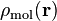, into atomic contributions is to define a
weight function,  , for every atom 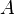 in the
molecule. The function value is in the range
, for every atom 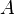 in the
molecule. The function value is in the range ![[0,1]](images/math/e861e10e1c19918756b9c8b7717684593c63aeb8.png) . The atomic denisty
is then defined as
. The atomic denisty
is then defined as
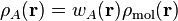
The weight functions must satisfy the condition
(1)
where N is the number of atoms, to guarantee that the sum of the atomic densities gives back the molecular density. There are two classes of weight functions, one where the weight functions are binary functions with only 0 or 1 as possible function values, and the fuzzy weight functions where all intermediate values are also allowed. One can think of binary weight functions as a means to divide the entire molecular volume into mutually exclusive atomic regions. The resulting atomic densities are completely non-overlapping. The fuzzy weights lead to atoms that have overlapping densities. All partitioning methods in HiPart are fuzzy-atom partitioning methods.
It is common practice to introduce for each atom a so-called pro-atomic
function,  , as an auxiliary tool to define the
actual weight functions. The weight functions are derived from the pro-atomic
functions as follows:
, as an auxiliary tool to define the
actual weight functions. The weight functions are derived from the pro-atomic
functions as follows:

The denominator in this expression is called the pro-molecular density. This definition of the weight function always satisfies condition (1) for a broad class of pro-atomic functions.
2.1.1. Becke¶
Becke [Becke1988] proposed a partitioning scheme that was in the first place meant as an auxiliary tool to divide an integral over the entire molecular volume into a sum of atomic integrals. Each atomic integral is evaluated on a spherical grid using numerical techniques. This is far more convenient than constructing a global molecular integration grid.
The Becke weights are designed to be mathematically as simple as possible, only
using simple polynomials of distances between atoms and grid points. Becke
introduces so called atomic cell functions,  , which play
exactly the same role as the pro-atomic function. The weights are derived from
the cell functions as follows:
, which play
exactly the same role as the pro-atomic function. The weights are derived from
the cell functions as follows:
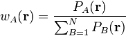
Each cell function is the product of a series of switching functions
 :
:
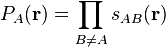
The switching function goes smoothly from 1 to 0 as one moves from atom to atom 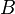. The gradient of the switching function becomes zero in the vicinity of the nuclei. Now it is only a matter of constructing a simple switching function to complete the partitioning method.
Becke proposed the following approach. He starts from one of the elliptical coordinates:
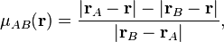
where 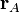 is the position of atom and
 is the position of atom . This coordinate is -1 at
the position of atom and +1 at the position of atom . Then he
introduces the functions 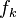 as follows:
is the position of atom . This coordinate is -1 at
the position of atom and +1 at the position of atom . Then he
introduces the functions 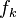 as follows:

The nice property of these functions is that 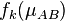 is -1 and +1 at the respective nuclei and that the gradient of this function becomes zero in the vicinity of the nuclei. A simple transformation of the function 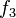 is used to define the switching function.

The choice of iteration order,  , is somewhat arbitrary, but Becke
experienced that 3 was a good trade-off between the sphericity of the atomic
densities (to limit the density of the integration grids) and the locality of
the atomic densities (to limit the extent of the integration grids).
, is somewhat arbitrary, but Becke
experienced that 3 was a good trade-off between the sphericity of the atomic
densities (to limit the density of the integration grids) and the locality of
the atomic densities (to limit the extent of the integration grids).
The above definition of the switching functions (and hence weight functions) is
suitable for homonuclear systems. However, for heteronuclear functions it is
desirable to transform the elliptical coordinate,  , such that it
crosses zero around the point where the density in the bond region has a
saddle point. Becke proposes the following transformation:
, such that it
crosses zero around the point where the density in the bond region has a
saddle point. Becke proposes the following transformation:
(2)
The parameter 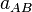 controls the position between atoms and
where 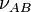 goes through zero, and can be used to tune
the size of the basins defined by the weight functions. Based on the covalent
bond radii, 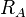 and  , Becke defines
, Becke defines
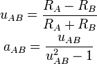
This choice assigns proportionally larger basins to larger atoms in the
molecule, which further improves the convergence of the numerical integrations
over the atomic grids. Note that the absolute value of must be
smaller than  to guarantee that the transform in equation
(2) is monotonous.
to guarantee that the transform in equation
(2) is monotonous.
In HiPart the parameter is constrained to have an absolute value smaller than 0.45 to suppress pristine behavior. The covalent radii for HiPart are taken from [Cordero2008].
2.1.2. Hirshfeld¶
Hirshfeld [Hirshfeld1977] proposed a partitioning scheme where pro-atomic densities are derived from computations on neutral atoms by simply averaging the atomic density over the angular degrees of freedom,

where  represents the angular degrees of freedom. Prior to the
application of this partitioning scheme one must setup a database of spherically
averaged atomic densities for all elements that are present in the molecule of
interest. For the sake of consistency, this needs to be carried out with the same
level of theory (and basis set) that is used for the molecular computation.
represents the angular degrees of freedom. Prior to the
application of this partitioning scheme one must setup a database of spherically
averaged atomic densities for all elements that are present in the molecule of
interest. For the sake of consistency, this needs to be carried out with the same
level of theory (and basis set) that is used for the molecular computation.
2.1.3. Iterative Hirshfeld¶
The choice of neutral pro-atoms in the standard Hirshfeld scheme is somewhat arbitrary. The Iterative Hirshfeld scheme [Bultinck2007] is an extension of the original method, where one seeks for pro-atomic densities that have the same number of electrons as the atomic partitions in the molecule.
Bultinck et al. introduce a pro-atomic function with an additional parameter,
 , ie.e the fractional number of electrons in the pro-atomic density.
For integer values of this parameter, the pro-atomic density is just the
spherical average of the corresponding atom in vacuum:
, ie.e the fractional number of electrons in the pro-atomic density.
For integer values of this parameter, the pro-atomic density is just the
spherical average of the corresponding atom in vacuum:
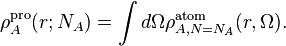
For non-integer values of the parameter , the pro-atomic density is a
linear interpolation between the two neighboring integer-charged atoms:
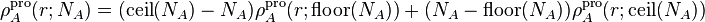
The values are obtained in an iterative procedure. Initially, they
are all set to zero, and one computes the populations just like in the original
Hirshfeld scheme. In the subsequent iterations the parameters are
set to the populations from the previous iteration and one uses these pro-atoms
to compute the population for the next iteration. This is repeated until the
atomic populations converge, i.e. when the maximum absolute value of the
difference in atomic populations between two iterations drops below a predefined
threshold.
Before one can use the Iterative Hirshfeld methods, one must first construct a database of pro-atomic densities for all the elements in the molecule under scrutiny. For each element one must compute different charge states.
This scheme is also referred to as Hirshfeld-I.
2.1.4. Iterative Stockholder Analysis¶
The ISA scheme is another extension to the original Hirshfeld method where one tries to construct spherically symatric pro-atoms that are as similar as possible to the atomic partitions in the molecule. [Lillestolen2008]
The initial pro-atoms are constructed by taking the minimal molecular electron density as a function of the distance from the nucleus. For numerical reasons this minimal value constrained to be non-zero:
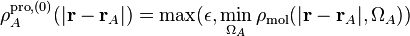
where 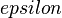 is a small positive number and  are the
angular degrees of freedom of the spherical coordinate system centered at atom
. In each ISA iteration , the new pro-atoms are taken to be
the spherical average of the atomic densities from the previous iteration.
are the
angular degrees of freedom of the spherical coordinate system centered at atom
. In each ISA iteration , the new pro-atoms are taken to be
the spherical average of the atomic densities from the previous iteration.
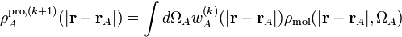
This is again repeated until the atomic populations converge. Note that this scheme does not depend on a database of atomic densities.
2.2. Atomic properties derived from the density¶
In this section we discuss the properties derived from the atomic electron densities:
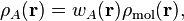
where is the atomic weight function of atom
obtained with some partitioning scheme and
is the molecular electron density.
It may be interesting to see how the molecular density is derived from the density matrix obtained with a quantum chemical ground state computation. First the basis functions, 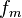 are evaluated in the point 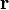, where 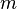 runs from 1 to the number of basis functions. In matrix notation the molecular density is then computed as follows:

where is the density matrix.
2.2.1. Charges, Dipoles & Multipoles¶
The multipole expansion of an atomic density with respect to its nucleus is defined as follows:
(3)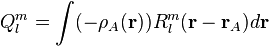
where  is the regular solid harmonic. This multipole expansion
can be used to compute the external electrostatic potential generated by the
atomic density. By external we mean outside the atom where the atomic electron
density is negligible. This potential is computed as follows:
is the regular solid harmonic. This multipole expansion
can be used to compute the external electrostatic potential generated by the
atomic density. By external we mean outside the atom where the atomic electron
density is negligible. This potential is computed as follows:

where 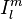 is the irregular solid harmonic. The regular and irregular solid harmonics are related to the spherical harmonics, 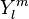 as follows:
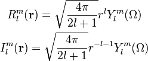
In HiPart we use the real valued variants of these functions and we replace the integrals (3) by their real counterparts:
(4)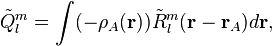
with

The table below lists all regular solid harmonics implemented in HiPart, i.e. up to the hexadecapole, 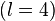. The formulae are automatically generated, which causes a somewhat ugly formatting.
| (0,0) |  |
| (1,0) | 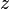 |
| (1,1+) |  |
| (1,1-) |  |
| (2,0) | 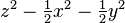 |
| (2,1+) |  |
| (2,1-) | 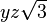 |
| (2,2+) |  |
| (2,2-) | 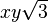 |
| (3,0) | 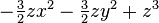 |
| (3,1+) | 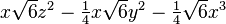 |
| (3,1-) |  |
| (3,2+) |  |
| (3,2-) | 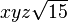 |
| (3,3+) |  |
| (3,3-) |  |
| (4,0) | 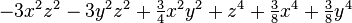 |
| (4,1+) |  |
| (4,1-) |  |
| (4,2+) | 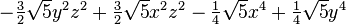 |
| (4,2-) | 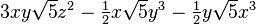 |
| (4,3+) |  |
| (4,3-) |  |
| (4,4+) |  |
| (4,4-) |  |
The first line in this table corresponds to the atomic population, after adding the nuclear charge, one obtains the effective atomic charge. The subsequent three rows correspond to the components of the atomic dipole, and so on.
2.2.2. Net and overlap populations¶
The net and overlap populations are obtained by inserting the weight function twice in the integral over the molecular density:
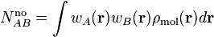
The diagonal elements are the net populations. One can interpret the net population of an atom as the amount of electrons that is associated only with that atom. The overlap populations, i.e. off-diagonal elements, can be interpreted as the amount of electrons that are shared between two atoms.
These quantities are certainly not convenient as measures for atomic valence and bond order, although one can expect that there must be some correlation between the overlap population and the bond order. The main issue is that these numbers are not even close to the integer values that one would expect for atomic valences and bond orders. In the case of binary weight functions, the overlap populations would be zero and the net charges would be the regular atomic populations.
2.3. Atomic properties derived from the spin density¶
In this section we discuss the properties derived from the atomic spin densities:
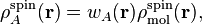
where is the atomic weight function of atom
obtained with some partitioning scheme and
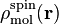 is the molecular spin
density.
The spin density is derived from the spin density matrix in the same way as the conventional electron density is derived from the density matrix:
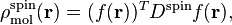
where  is the vector with basis functions evaluated in
point and 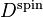 is the spin density matrix.
The spin density matrix and the conventional density matrix can be derived from
the alpha spin density matrix,
is the vector with basis functions evaluated in
point and 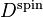 is the spin density matrix.
The spin density matrix and the conventional density matrix can be derived from
the alpha spin density matrix,  , and the beta spin density
matrix, 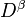, as follows:
, and the beta spin density
matrix, 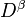, as follows:

2.3.1. Spin charges¶
The spin charges are the atomic populations derived from the molecular spin density.
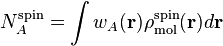
2.4. Atomic overlap matrices (in the basis of contracted Gaussians)¶
The atomic overlap matrices do not depend on the density or density matrix, but only depend on the basis functions used to describe the wavefunction. The conventional overlap matrix is defined as follows:

The square root of the overlap matrix can be used to transform the non-orthogonal basis of contracted Gaussians into an orthonormal basis, and is in general a tool to work with non-orthogonal basis sets. One defines the atomic overlap matrix by inserting an atomic weight function into the integral:

One can define the atomic population as the trace of the product of the density matrix and the corresponding atomic overlap matrix:
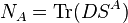
Similarly, one can write down the spin charges as function of the spin density matrix and the overlap matrix:
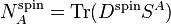
2.5. Atomic properties derived from the density matrix¶
All properties discussed in the previous sections can be written as an integral
over the electron (spin) density multiplied by a (weight) function.
Alternatively one can also go back to the matrix  and manipulate
this object before taking the trace. This allows use to derive new quantities
that are not simple written as a function of the electron density.
and manipulate
this object before taking the trace. This allows use to derive new quantities
that are not simple written as a function of the electron density.
2.5.1. Bond orders and atomic valences¶
One defines the bond order, valence and free valence, in the fuzzy atom framework as follows:
![\mathcal{B}_{AB} = 2\mathrm{Tr}\left[(D^{\alpha} S^A)(D^{\alpha} S^B)^T + (D^{\beta} S^A)(D^{\beta} S^B)^T \right]
\mathcal{V}_A = 2 N_A - \mathrm{Tr}\left[ (D S^A)(D S^A)^T \right]
\mathcal{F}_A = \mathcal{V}_A - \sum_{B \neq A} \mathcal{B}_{AB}](images/math/5138b19bceb44fa31b828e9b4a1157112ae940a8.png)
Mayer has written a personal account [Mayer2007] about bond orders and valence indices. It is a good introduction for those who are new to these concepts.
2.6. Atomic overlap matrices (in the basis of the orbitals)¶
The overlap matrix can also be computed in the basis of the orbitals. Because the orbitals are an orthogonal basis, the conventional overlap matrix
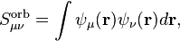
where  and are the orbitals, is simply the
identity matrix. One can now define atomic contributions to this matrix by
inserting the atomic weight functions into the integral:
and are the orbitals, is simply the
identity matrix. One can now define atomic contributions to this matrix by
inserting the atomic weight functions into the integral:

This is in principle the same quantity is introduced earlier, but just in a different basis.
2.7. Electrostatic Potential (ESP) Fitting¶
In this section we will refer to electrostatic potential generated by the
electron density and the nuclei as the full ESP, or  .
.
ESP fitting is a procedure where the amplitudes of point monopoles at the positions of the nuclei are fitted to reproduce the full ESP outside the molecule. Advanced schemes also include dipoles and optionally higher multipoles, and consider also other critical points than just the positions of the nuclei.
The goodness of the reproduction of the potential outside the molecule is
typically measured by a fitness (or cost) function. In the most simplistic
approach, this fitness function is simply a sum of weighted squared errors
between the full-blown potential, , and the potential
generated by the point charges, :
Minimization of this fitness function with respect to the unknowns, the charges
 , yields the ESP-optimal charges.
, yields the ESP-optimal charges.
Most ESP fitting methods differ in the way the grid points are constructed. No
matter how one selects the grid points, the cost function  is always
ill defined. Several attempts have been made to turn this fitness function into
a well-behaved one, of which the RESP method [Bayly1993] is the most
wide-spread. In HiPart, this rank-deficiency issue of the fitness function is less
problematic because HiPart only uses such cost functions to measure how well
charges (and dipoles) derived from a partitioning scheme are able to reproduce
the ESP on a set of grid points around the molecule. HiPart does not compute
ESP-fitted charges.
is always
ill defined. Several attempts have been made to turn this fitness function into
a well-behaved one, of which the RESP method [Bayly1993] is the most
wide-spread. In HiPart, this rank-deficiency issue of the fitness function is less
problematic because HiPart only uses such cost functions to measure how well
charges (and dipoles) derived from a partitioning scheme are able to reproduce
the ESP on a set of grid points around the molecule. HiPart does not compute
ESP-fitted charges.
The selection of grid points for the cost function used in HiPart is discussed in [Verstraelen2009]. All weights are set to 1. The relevant paragraph for the paper is quoted below for the details:
We do not rely on charges that are fitted to reproduce the ESP around the molecule because they generally suffer from statistical inaccuracies. This does not mean that the ESP around the molecule is an irrelevant quantity. For the development of the electrostatic term in a FF model, one is, in principle, only interested in the reproduction of the ESP generated by the full electron density, not only in the gas phase but also when the electron density adapts to an electrostatic perturbation. Under these conditions one can reproduce the correct electrostatic interactions. We evaluated, for each single point calculation, the ab initio ESP on a molecular grid to benchmark the performance of each parametrization. A two-dimensional schematic picture of the grid is given in Fig. 4. It is constructed as follows. First, 30 concentric spheres are placed around each atom. The minimum sphere radius is 1.5 times the radius of the noble gas core of the corresponding atom, the maximum radius is 30 times the noble gas core radius. The radii of intermediate spheres are equidistant on a logarithmic scale. On each sphere, we used randomly rotated 50-point Lebedev–Laikov grids. The random rotation avoids arbitrary preferred directions. For this study, we only retained the grid points where the electron density is lower than 10e−5 a.u.
This is figure 4 from the paper: